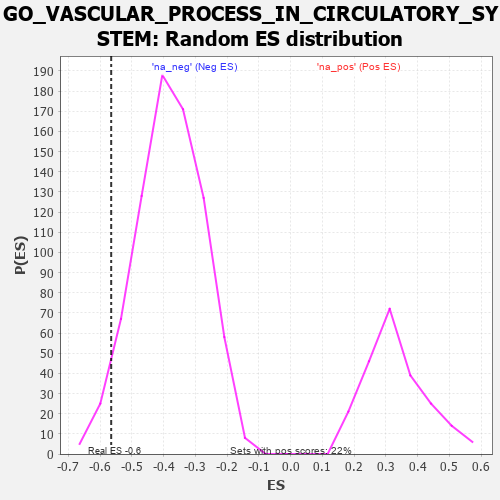

| | | Dataset | 7d |
| Phenotype | NoPhenotypeAvailable |
| Upregulated in class | na_neg |
| GeneSet | GO_VASCULAR_PROCESS_IN_CIRCULATORY_SYSTEM |
| Enrichment Score (ES) | -0.5651735 |
| Normalized Enrichment Score (NES) | -1.4843613 |
| Nominal p-value | 0.04118404 |
| FDR q-value | 0.20969477 |
| FWER p-Value | 1.0 |
Table: GSEA Results Summary
 Fig 1: Enrichment plot: GO_VASCULAR_PROCESS_IN_CIRCULATORY_SYSTEM
Fig 1: Enrichment plot: GO_VASCULAR_PROCESS_IN_CIRCULATORY_SYSTEM
Profile of the Running ES Score & Positions of GeneSet Members on the Rank Ordered List
| PROBE | GENE SYMBOL | GENE_TITLE | RANK IN GENE LIST | RANK METRIC SCORE | RUNNING ES | CORE ENRICHMENT | | 1 | AKT1 | | | 1040 | 0.476 | -0.1008 | No |
| 2 | SRC | | | 1128 | 0.459 | -0.0828 | No |
| 3 | P2RY1 | | | 1416 | 0.407 | -0.0932 | No |
| 4 | PLOD3 | | | 1715 | 0.353 | -0.1084 | No |
| 5 | ABR | | | 1812 | 0.335 | -0.0993 | No |
| 6 | SLIT2 | | | 2724 | 0.195 | -0.2016 | No |
| 7 | GPX1 | | | 3109 | 0.135 | -0.2414 | No |
| 8 | GCH1 | | | 3166 | 0.127 | -0.2404 | No |
| 9 | HTR1B | | | 3745 | 0.035 | -0.3109 | No |
| 10 | ATG5 | | | 4051 | -0.016 | -0.3483 | No |
| 11 | DDAH1 | | | 4056 | -0.016 | -0.3478 | No |
| 12 | ADRB2 | | | 4352 | -0.068 | -0.3806 | No |
| 13 | GRIP2 | | | 4372 | -0.071 | -0.3785 | No |
| 14 | GPR4 | | | 5219 | -0.250 | -0.4692 | No |
| 15 | ABCG2 | | | 5556 | -0.335 | -0.4903 | No |
| 16 | ROCK1 | | | 6152 | -0.520 | -0.5323 | Yes |
| 17 | BBS2 | | | 6383 | -0.608 | -0.5229 | Yes |
| 18 | TRPM4 | | | 6390 | -0.612 | -0.4850 | Yes |
| 19 | TRPV4 | | | 6515 | -0.668 | -0.4583 | Yes |
| 20 | ACE | | | 6526 | -0.674 | -0.4170 | Yes |
| 21 | EGFR | | | 6708 | -0.765 | -0.3914 | Yes |
| 22 | PDE2A | | | 6985 | -0.927 | -0.3676 | Yes |
| 23 | PTPRJ | | | 7180 | -1.054 | -0.3254 | Yes |
| 24 | WDR35 | | | 7357 | -1.225 | -0.2702 | Yes |
| 25 | ECE1 | | | 7867 | -2.498 | -0.1763 | Yes |
| 26 | ASIC2 | | | 7917 | -2.995 | 0.0068 | Yes |
Table: GSEA details [plain text format]

Fig 2: GO_VASCULAR_PROCESS_IN_CIRCULATORY_SYSTEM: Random ES distribution
Gene set null distribution of ES for GO_VASCULAR_PROCESS_IN_CIRCULATORY_SYSTEM